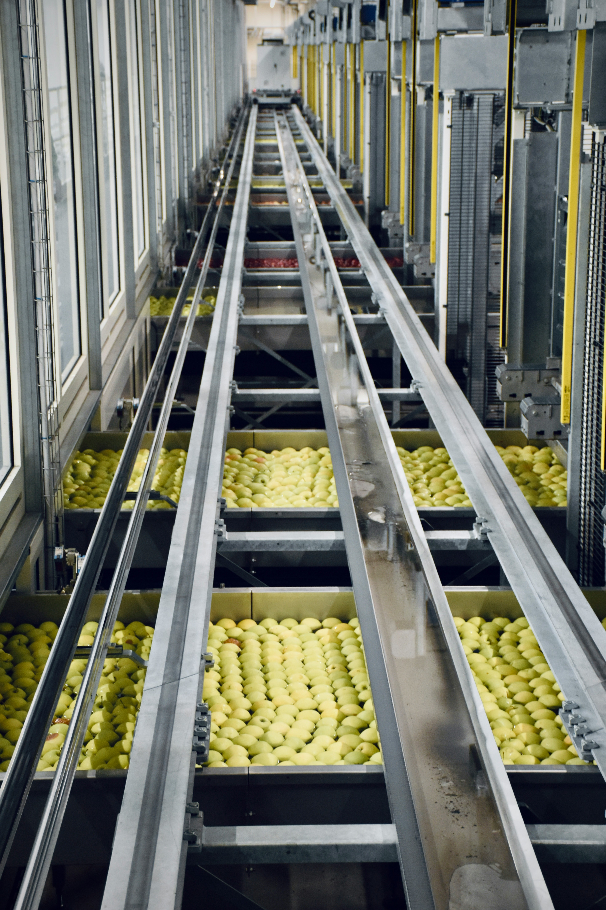
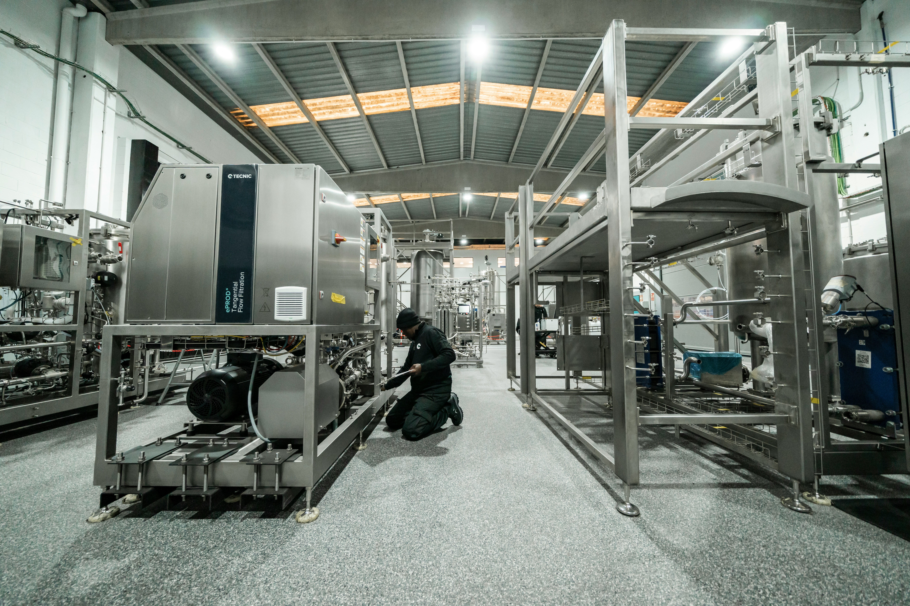
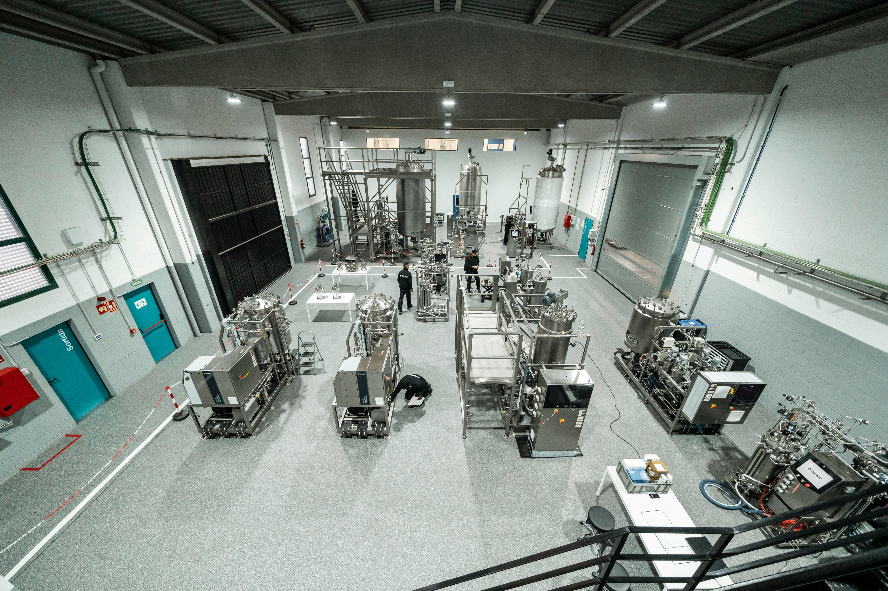
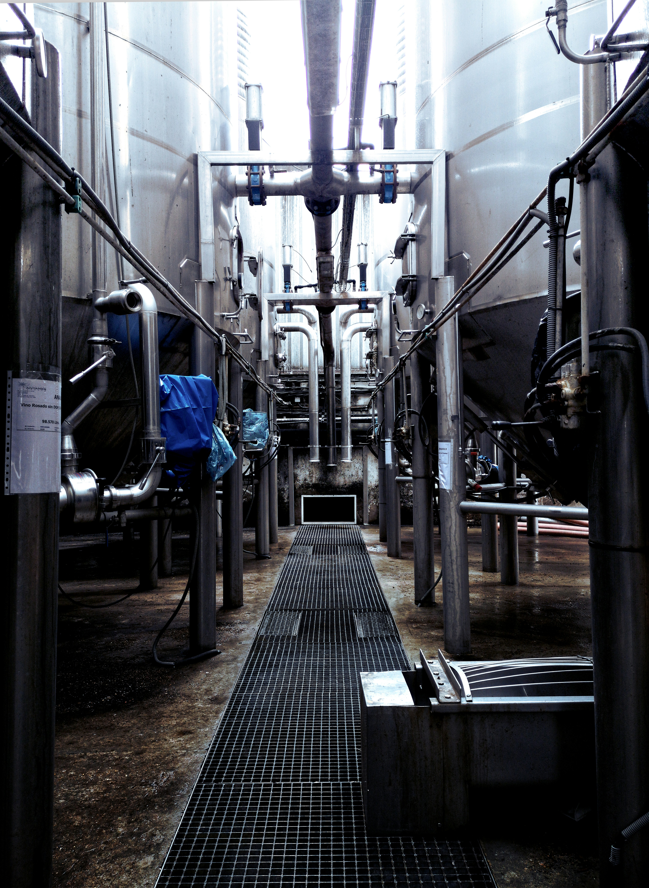

Industrial Production Systems
Heavy hardware assets engineered for mid-market installations and optimized for maximum yield extraction.

Flour & Grain Milling Hardware
High-output commercial pneumatic milling setups and screening complexes. Systems are calibrated for optimal extraction rates, grain tempering control, and heavy-duty continuous material routing.

Dairy Processing Supplies
Modular turnkey pasteurization units, homogenizers, sanitization arrays, and high-speed automated filling and bottling lines engineered under strict international sanitary protocols.

Condiment & Sauce Processing
High-viscosity vacuum-cooking systems, automated batching mixing equipment, and precise continuous filling systems designed specifically to handle complex condiment formulas including Ketchup and Mustard.

Beverage & Industrial Juicing
High-capacity cold extraction units, centrifugal clarifiers, sterile fine filtration systems, and aseptic cold-fill packaging arrays engineered to maintain shelf-life stability without nutrient degradation.

Edible Oil Pressing & Refining
High-pressure mechanical screw expellers and filtration hardware optimized for cold and hot processing of delicate seeds and crops, with custom setups for Sunflower, Avocado, and specialized vegetable oils.